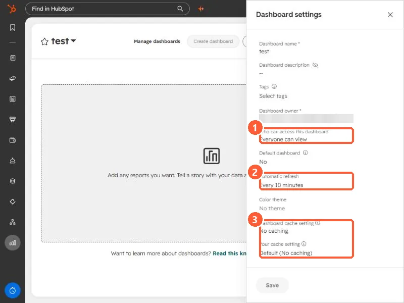

Short answer
Open a dashboard and click the gear icon. The panel has the dashboard name, description, tags, owner, Who can access this dashboard, Default dashboard, Automatic refresh, color theme, and two cache settings. Access options are owner and admins only, everyone can view, everyone can view and edit, and, on Enterprise, specific users and teams. HubSpot also suggests turning on report caching so a dashboard loads saved data on return visits.
1. Open the settings panel
Go to Dashboards, open a dashboard, and click the gear icon in the top right. The owner's email is blurred below. Everything else is as it appears in my demo portal.


2. Who can access it
The access setting has these levels:
- Owner and admins only. Only Super Admins and the owner see it.
- Everyone can view. Anyone in the account can see it. This demo dashboard uses this.
- Everyone can view and edit. Anyone can change it, so use it carefully.
- Specific users and teams. HubSpot says this needs an Enterprise subscription.
Super Admins and users with admin permission for dashboards, reports, and analytics can change any dashboard, whatever its visibility. Other users can change only dashboards they own or can edit.
3. Default dashboard
Set Default dashboard to Yes and that dashboard opens first when you go to Dashboards. HubSpot says it is also the dashboard shown when you log in or click the HubSpot sprocket, so it suits the one you check first.
4. Refresh and caching
The panel shows an Automatic refresh interval, which is every 10 minutes in my demo. HubSpot's data has its own schedule behind that. Dashboard data that relies on analytics updates about every 40 minutes, and you can refresh a report or dashboard manually once every 15 minutes. Reports from the custom report builder refresh about every two hours.
Below that are Dashboard cache setting and Your cache setting. Mine both read no caching. When I opened the dashboard, HubSpot suggested turning on report caching so the dashboard uses saved data on return visits and does not pull fresh data every time. That trades freshness for speed, so decide per dashboard.
The dashboard footer shows the time zone its data is based on. Check it matches how your team reads dates.
To put reports on the dashboard, see add reports to a dashboard.